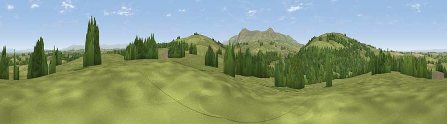

Viewpoint near Sebergham
#21633 in England · top 80% of its area beats it · near SeberghamThe view, rendered

A 360° render of this exact spot computed from the terrain model, tree cover and land cover — summer colours, afternoon light, calibrated against photographs of famous viewpoints. Real trees, hedges and buildings will differ in detail.
The panorama
Grey silhouette: terrain skyline in each direction (720 bearings, Earth curvature and refraction included). Dashed green: skyline with trees (+15 m) and buildings (+8 m) as obstacles. Blue strip: how far the ground is visible on each bearing.
Where the view opens
Wedge length = distance to the farthest visible ground on that bearing (vegetation-aware). Rings at 10, 25 and 50 km.
What fills the view
72% grassland · 22% woodland · 6% cropland ·
Angular shares of the visible panorama (visual magnitude), not map area. Landscape diversity 0.34 (0–1 Shannon).
Key numbers
More beautiful places nearby
The staircase of upgrades: each row has a higher view potential than everything closer. Driving times are estimates from straight-line distance, calibrated against real road routing — check an actual route before setting out.
| Place | Direction | Drive | Score |
|---|---|---|---|
| Viewpoint near Sebergham | WSW · 1 km | ~4 min | 61.4 |
| Viewpoint near Sebergham | W · 2 km | ~4 min | 65.7 |
| Viewpoint near Sebergham | SSE · 2 km | ~5 min | 68.5 |
| Warnell Fell | W · 3 km | ~7 min | 72.1 |
| Viewpoint near Hesket Newmarket | SSW · 6 km | ~13 min | 75.6 |
| High Pike | SW · 8 km | ~16 min | 79.5 |
| Viewpoint near Mungrisdale | SSW · 10 km | ~20 min | 80.8 |
| Barrock Fell | ENE · 12 km | ~22 min | 81.1 |
54.76058, -2.98793 · source: screening · position refined by local search. Computed location — check access rights before visiting.